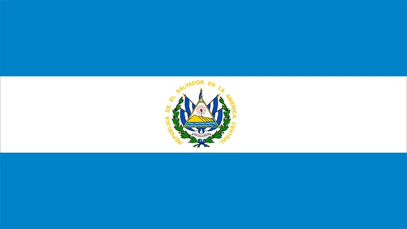

Jose Escoto
About Me
My name is Jose and I am a web development student passionate about creating dynamic and responsive websites. I am currently studying WDD 131 to enhance my skills in HTML, CSS, and JavaScript. I enjoy learning new technologies and applying them to real-world projects.
San Salvador, El Salvador
El Salvador is a small Central American country known for its Pacific coastline, volcanic landscapes, and rich cultural heritage. The country has made significant strides in technology and is becoming increasingly connected to the global digital economy.

Official Flag of El Salvador
Web Dev Resources
Here are some valuable resources for web development that I've found helpful during my studies: